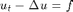
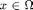
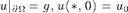
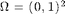
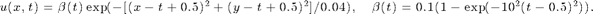

Project: Heat Equation
The purpose of this project is to implement explict and implicit numerical methods for solving the parabolic equation. The example is the heat equation
 for , and .
We consider a 2-d problem on the unit square  with the exact solution

Contents
Step 1: Forward Euler, Backward Euler, and Crack-Nicolson methods
- Given a mesh for the unit square, construct the stiffness matrix A for the Laplace operator and the mass matrix M for the identity operator.
- Given a time step size dt, final time T, code a for loop over time to involve the solution by either forward, backward Euler or Crack-Nicolson methods.
- Please do not store the approximation at all time steps. Instead only the solution in the previous step uold and the current step u is needed.
- For implicit methods, use direct solver or multigrid to solve the linear system. If the mesh generated using squaremesh in ifem, you can use mg(A,b,elem). With input mesh, mg is faster than amg.
Step 2: Check the convergence
- Check the convergence rate in time and space. You can use the exact solution to get the nodal interpolant uI and compute the H1 norm of the error using matrix A and the L2 norm using matrix M.
- To check the convergence rate in time, you can fix a small h in space and let dt vary and vice verse for convergence in space.
Step 3: Visulization
- Use showsolution(node,elem,u) to plot the solution and together with pause(0.01) to get an animation.
- For small time step, do not plot the solution at every time step. Instead you can plot every 10 or 100 steps.
- You can save the plot into a movie. Read doc getframe for an example.
Step 4: Adaptive finite element method
- Run 2D examples: Lshape, crack and Kellogg in iFEM and read the code to learn the usage of AFEM.
- In one time step involution, repeat the refinement and coarsen several steps to get a better approximation of the solution. You can control the max iteration steps for AFEM or the maximal number of elements. You may need nodeinterpolate and eleminterpolate to interpolate function between different meshes.
- Check the convergence rate for AFEM.
- Make animation for meshes and solutions.